No matching publications.
Try a different search or publication type.
Conference papers
Including accepted conference and workshop papers
Removal Without Revocation: Bounding What a Model-Hub Takedown Cannot Reach
AsiaCCS 2027 Accepted CORE A Direct acceptance rate 7.6% (39/514)
BibTeX for Removal Without Revocation: Bounding What a Model-Hub Takedown Cannot Reach
@inproceedings{removalwithoutrevocation2027,
title={{Removal Without Revocation: Bounding What a Model-Hub Takedown Cannot Reach}},
author={Phat T. Tran-Truong and Xuan-Bach Le and Thanh Chi Vi and Son Ha},
booktitle={ACM Asia Conference on Computer and Communications Security (AsiaCCS)},
year={2027},
note={Accepted for publication}
}TRAVA: A Temporal RAG Validity Audit of Knowledge Cutoffs and Evidence Support
EACL 2027 Accepted CORE A
BibTeX for TRAVA: A Temporal RAG Validity Audit of Knowledge Cutoffs and Evidence Support
@inproceedings{trava2027,
title={{TRAVA: A Temporal RAG Validity Audit of Knowledge Cutoffs and Evidence Support}},
author={Xuan-Bach Le and Phat T. Tran-Truong and Son X. Ha and Hieu Le and Duy Nguyen},
booktitle={Conference of the European Chapter of the Association for Computational Linguistics (EACL)},
year={2027},
note={Accepted for publication}
}Stability Across Environments, Not Resamples: Noise-Corrected Symbolic Pattern Mining
WSDM 2027 Main track CORE A Acceptance rate 15.8% (277/1,756)
Abstract for Stability Across Environments, Not Resamples: Noise-Corrected Symbolic Pattern Mining
Abstract summary
The paper develops a symbolic pattern miner that ranks rules by their average effect across environments and penalizes genuine heterogeneity after accounting for sampling noise. Across 11 public datasets, the method reduced variation across held-out environments compared with pooled ranking and lowered transfer error on nine datasets.
BibTeX for Stability Across Environments, Not Resamples: Noise-Corrected Symbolic Pattern Mining
@inproceedings{symbolicpatternmining2027,
title={{Stability Across Environments, Not Resamples: Noise-Corrected Symbolic Pattern Mining}},
author={P. T. Tran-Truong and Son Ha and Xuan-Bach Le and Nghia Duong-Trung},
booktitle={ACM International Conference on Web Search and Data Mining (WSDM), Main Track},
year={2027},
note={Accepted for publication}
}A Selection-Aware Audit of Learned Stopping in Short-Horizon Iterative Retrieval
WSDM 2027 Main track CORE A Acceptance rate 15.8% (277/1,756)
Abstract for A Selection-Aware Audit of Learned Stopping in Short-Horizon Iterative Retrieval
Abstract summary
The paper compares four signals for deciding when an iterative question-answering agent should stop retrieving. At matched retrieval cost, learned stopping rarely improves on fixed budgets chosen on development data. A hindsight oracle finds substantial gains, pointing to a gap in identifying useful stopping signals.
BibTeX for A Selection-Aware Audit of Learned Stopping in Short-Horizon Iterative Retrieval
@inproceedings{learnedstoppingaudit2027,
title={{A Selection-Aware Audit of Learned Stopping in Short-Horizon Iterative Retrieval}},
author={Xuan-Bach Le and P. T. Tran-Truong and Son Ha and Duy Nguyen},
booktitle={ACM International Conference on Web Search and Data Mining (WSDM), Main Track},
year={2027},
note={Accepted for publication}
}EvidenceGraph: Measuring and Controlling Repeated Evidence in Retrieval-Augmented Verification
WSDM 2027 Main track CORE A Acceptance rate 15.8% (277/1,756)
Abstract for EvidenceGraph: Measuring and Controlling Repeated Evidence in Retrieval-Augmented Verification
Abstract summary
EvidenceGraph tracks which retrieved passages share an origin, so repeated copies of a claim can be distinguished from independent evidence. Controlled duplication tests show that grouping passages by origin prevents most of the resulting confidence inflation. The study also measures how lineage estimation and redundancy controls transfer to natural evidence pools.
BibTeX for EvidenceGraph: Measuring and Controlling Repeated Evidence in Retrieval-Augmented Verification
@inproceedings{evidencegraph2027,
title={{EvidenceGraph: Measuring and Controlling Repeated Evidence in Retrieval-Augmented Verification}},
author={Xuan-Bach Le and P. T. Tran-Truong and Son Ha and Duy Nguyen},
booktitle={ACM International Conference on Web Search and Data Mining (WSDM), Main Track},
year={2027},
note={Accepted for publication}
}Fluent but Foreign: Benchmarking Cultural Understanding of Multilingual Large Language Models in Vietnamese
WSDM 2027 Main track CORE A Acceptance rate 15.8% (277/1,756)
BibTeX for Fluent but Foreign: Benchmarking Cultural Understanding of Multilingual Large Language Models in Vietnamese
@inproceedings{vietnameseculturalbenchmark2027,
title={{Fluent but Foreign: Benchmarking Cultural Understanding of Multilingual Large Language Models in Vietnamese}},
author={Thi Ty Nguyen and Long S. T. Nguyen and Tan Sang Nguyen and Nhu Tran and Khang Nguyen and Dong Doan and Vy Le and Ngoc Tran and P. T. Tran-Truong and Tho T. Quan},
booktitle={ACM International Conference on Web Search and Data Mining (WSDM), Main Track},
year={2027},
note={Accepted for publication}
}When Do Propagation Models Beat Cascade Summaries? A Released-Signal Audit of Text-Free Misinformation Detection
WSDM 2027 Findings WSDM CORE A Acceptance rate 12.6% (222/1,756)
Abstract for When Do Propagation Models Beat Cascade Summaries? A Released-Signal Audit of Text-Free Misinformation Detection
Abstract summary
The authors compare graph models and simpler cascade summaries for detecting misinformation without text across nine datasets. Graph models show no reliable advantage on releases that expose events without retweet edges. The strongest resolved gain on a tree-based dataset is small and is largely attributable to released profile features.
BibTeX for When Do Propagation Models Beat Cascade Summaries? A Released-Signal Audit of Text-Free Misinformation Detection
@inproceedings{misinformationpropagationaudit2027,
title={{When Do Propagation Models Beat Cascade Summaries? A Released-Signal Audit of Text-Free Misinformation Detection}},
author={Xuan-Bach Le and P. T. Tran-Truong and Son Ha and Duy Nguyen},
booktitle={Findings of the ACM International Conference on Web Search and Data Mining (WSDM)},
year={2027},
note={Accepted for publication}
}SegMaFormer: A Hybrid State-Space and Transformer Model for Efficient 3D Medical Image Segmentation
WACV 2027 CORE A
Abstract for SegMaFormer: A Hybrid State-Space and Transformer Model for Efficient 3D Medical Image Segmentation
Earlier preprint summary
SegMaFormer combines state-space layers at high spatial resolutions with attention at lower resolutions to segment 3D medical images efficiently. The earlier preprint reports competitive Dice scores on Synapse, BraTS, and ACDC with substantially fewer parameters than larger models.
BibTeX for SegMaFormer: A Hybrid State-Space and Transformer Model for Efficient 3D Medical Image Segmentation
@inproceedings{segmaformer2027,
title={{SegMaFormer: A Hybrid State-Space and Transformer Model for Efficient 3D Medical Image Segmentation}},
author={Duy D. Nguyen and P. T. Tran-Truong and Xuan-Bach Le},
booktitle={IEEE/CVF Winter Conference on Applications of Computer Vision (WACV)},
year={2027},
note={Accepted for publication}
}Figure

GraphMemShield: Auditing Cross-Session Leakage in Graph Memories
CIKM 2026 Full research track CORE A Acceptance rate 26.9% (597/2,216)
Abstract for GraphMemShield: Auditing Cross-Session Leakage in Graph Memories
Abstract summary
GraphMemShield tests whether graph-backed assistants expose information from other sessions when they retrieve shared memories. It provides leakage probes, scoring for retrieved edges and generated responses, and comparisons between unrestricted retrieval and policies that isolate or bound cross-session access.
BibTeX for GraphMemShield: Auditing Cross-Session Leakage in Graph Memories
@inproceedings{graphmemshield2026,
title={{GraphMemShield: Auditing Cross-Session Leakage in Graph Memories}},
author={P. T. Tran-Truong and Xuan-Bach Le and Ha X. Son},
booktitle={ACM Conference on Information and Knowledge Management (CIKM), Full Research Track},
year={2026},
note={Accepted for publication},
url={https://drive.google.com/file/d/1sWQzD7oXUJJimC_JQG_ABYKI7Z8WPfrm/view?usp=sharing}
}Figure

From Natural-Language Hypotheses to Verified Data-Mining Discoveries
ICDM 2026 Research track CORE A* Acceptance rate 19.9% (392/1,966)
Abstract for From Natural-Language Hypotheses to Verified Data-Mining Discoveries
Abstract summary
VeraDM turns hypotheses proposed by language models into typed data-mining queries. A separate verifier checks statistical support and tests replication on held-out data before accepting a discovery. Each decision produces an evidence card that records the checks.
BibTeX for From Natural-Language Hypotheses to Verified Data-Mining Discoveries
@inproceedings{verifieddatamining2026,
title={{From Natural-Language Hypotheses to Verified Data-Mining Discoveries}},
author={P. T. Tran-Truong and Son Ha and Quang-Tung Nguyen and Xuan-Bach Le},
booktitle={IEEE International Conference on Data Mining (ICDM), Research Track},
year={2026},
note={Accepted for publication},
url={https://drive.google.com/file/d/1IBgIK8Lyibf76n4FMg_w81IpcrzArCyB/view?usp=sharing}
}Figure

Measuring the Unmeasurable: Markov Chain Reliability for LLM Agents
ISSRE 2026 CORE A
Abstract for Measuring the Unmeasurable: Markov Chain Reliability for LLM Agents
Abstract summary
TraceToChain fits agent execution traces to an absorbing Markov chain, checks how well it represents the observed trajectories, and estimates uncertainty. The resulting distribution over time to success connects benchmark metrics such as pass@k and reliability decay within a common model.
BibTeX for Measuring the Unmeasurable: Markov Chain Reliability for LLM Agents
@inproceedings{markovagentreliability2026,
title={{Measuring the Unmeasurable: Markov Chain Reliability for LLM Agents}},
author={P. T. Tran-Truong and Xuan-Bach Le},
booktitle={IEEE International Symposium on Software Reliability Engineering (ISSRE)},
year={2026},
note={Accepted for publication},
url={https://arxiv.org/abs/2604.24579}
}Figure

Distributional Program Analysis: Treating Large Language Models as Program Samplers
ASE 2026 NIER track CORE A* Acceptance rate 25.8% (23/89)
Abstract for Distributional Program Analysis: Treating Large Language Models as Program Samplers
Abstract summary
Distributional program analysis treats repeated generations from a language model as evidence about possible program properties. It measures how often an analyzer infers an invariant across samples and evaluates whether recurring invariants help identify promising programs in a HumanEval+ pilot.
BibTeX for Distributional Program Analysis: Treating Large Language Models as Program Samplers
@inproceedings{distributionalprogramanalysis2026,
title={{Distributional Program Analysis: Treating Large Language Models as Program Samplers}},
author={P. T. Tran-Truong and Xuan-Bach Le},
booktitle={IEEE/ACM International Conference on Automated Software Engineering (ASE), NIER Track},
year={2026},
doi={10.1145/3832783.3834555}
}Figure

DelegateGuard: Purpose-Bound Capabilities for Delegated LLM Agent Workflows
SecAssure at ESORICS 2026 Workshop ESORICS CORE A
Abstract for DelegateGuard: Purpose-Bound Capabilities for Delegated LLM Agent Workflows
Abstract summary
DelegateGuard examines the risk of delegated LLM agents using inherited authority to access data or act beyond an assigned task. It proposes purpose-bound capabilities and a runtime monitor that checks an agent’s requested operations before execution.
BibTeX for DelegateGuard: Purpose-Bound Capabilities for Delegated LLM Agent Workflows
@inproceedings{delegateguard2026,
title={{DelegateGuard: Purpose-Bound Capabilities for Delegated LLM Agent Workflows}},
author={P. T. Tran-Truong and Ha Vo and Khang Vo and Nhut Tran and Thai-Minh Truong},
booktitle={SecAssure Workshop at the European Symposium on Research in Computer Security (ESORICS)},
year={2026},
note={Accepted for publication},
url={https://drive.google.com/file/d/1foMEteLbqABRqgmAv1CuxYEIwFM6WK-b/view?usp=sharing}
}Figure

When Audit Quality Fails to Predict Downstream Utility: Synthetic-Data Selection for Low-Resource Classification
EMNLP 2026 Findings, pp. 25027–25045 EMNLP CORE A* Acceptance rate 14.3% (2,533/17,669)
Abstract for When Audit Quality Fails to Predict Downstream Utility: Synthetic-Data Selection for Low-Resource Classification
Abstract summary
The paper tests whether better audit scores for synthetic training examples translate into better classifiers in low-resource languages. Across two tasks and four languages, the selector with the highest judged label quality does not lead on downstream macro-F1. Retention budgets and label balance explain several performance differences.
BibTeX for When Audit Quality Fails to Predict Downstream Utility: Synthetic-Data Selection for Low-Resource Classification
@inproceedings{syntheticdataaudit2026,
title={{When Audit Quality Fails to Predict Downstream Utility: Synthetic-Data Selection for Low-Resource Classification}},
author={Xuan-Bach Le and P. T. Tran-Truong and Son Ha Xuan},
booktitle={Findings of the Association for Computational Linguistics: EMNLP 2026},
year={2026},
pages={25027--25045},
doi={10.18653/2026.findings-emnlp.1184}
}Figure

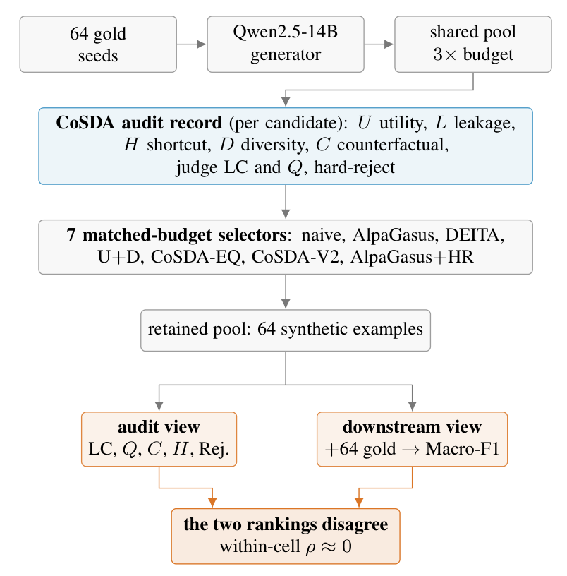
QuantumTrustKG: Provenance-Aware Orchestration for Quantum-Safe Microservices
ICSOC 2026 CORE A Acceptance rate 26.7% (64/240)
Abstract for QuantumTrustKG: Provenance-Aware Orchestration for Quantum-Safe Microservices
Abstract summary
QuantumTrustKG uses a provenance graph to choose post-quantum cryptographic profiles for individual service-mesh links. The controller checks endpoint capabilities, policy, threat information, and evidence freshness before changing a profile. Evaluations compare the safety of its control-plane decisions with several baselines.
BibTeX for QuantumTrustKG: Provenance-Aware Orchestration for Quantum-Safe Microservices
@inproceedings{quantumtrustkg2026,
title={{QuantumTrustKG: Provenance-Aware Orchestration for Quantum-Safe Microservices}},
author={Xuan-Bach Le and P. T. Tran-Truong and Duy Nguyen and Ngoc Khanh Tran Nguyen and Xuan Son Ha},
booktitle={International Conference on Service-Oriented Computing (ICSOC)},
year={2026},
note={Accepted for publication},
url={https://lexuanbach.github.io/publication/ICSOC2026a.pdf}
}Figure

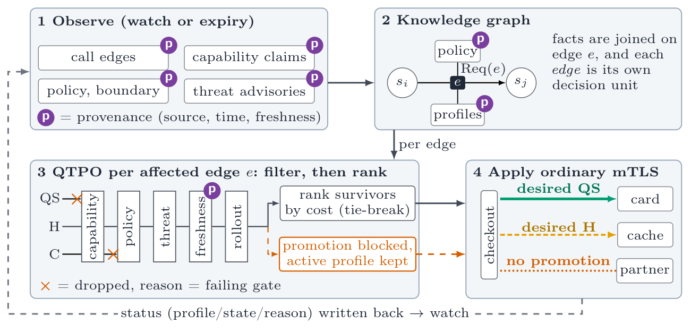
Deon: Runtime Guards for Policy-Safe Agentic Service Composition under Attack
ICSOC 2026 CORE A Acceptance rate 26.7% (64/240)
Abstract for Deon: Runtime Guards for Policy-Safe Agentic Service Composition under Attack
Abstract summary
Deon checks proposed agent service calls against explicit permissions, prohibitions, and obligations before execution. A second, calibrated detector handles violations outside those rules. The evaluation separates the guarantees of rule-based checks from the detector’s limits under adaptive attacks.
BibTeX for Deon: Runtime Guards for Policy-Safe Agentic Service Composition under Attack
@inproceedings{deon2026,
title={{Deon: Runtime Guards for Policy-Safe Agentic Service Composition under Attack}},
author={Xuan-Bach Le and P. T. Tran-Truong and Duy Nguyen and Ngoc Khanh Tran Nguyen},
booktitle={International Conference on Service-Oriented Computing (ICSOC)},
year={2026},
note={Accepted for publication},
url={https://lexuanbach.github.io/publication/ICSOC2026b.pdf}
}Figure

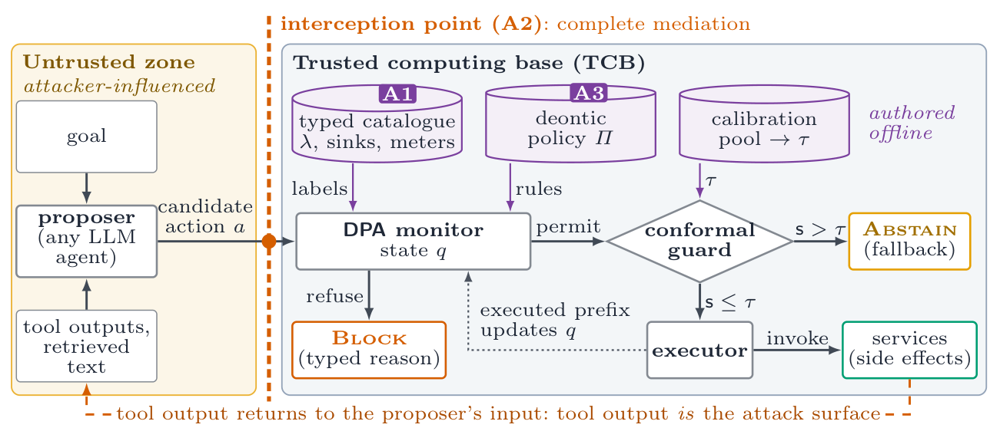
Lexi: Priority-First Service Orchestration
ICSOC 2026 CORE A Acceptance rate 26.7% (64/240)
Abstract for Lexi: Priority-First Service Orchestration
Abstract summary
Lexi selects service placements by prioritizing latency, privacy, carbon, and cost in a fixed order. In a cloud–edge–serverless simulation, it performs comparably to carefully tuned weighted policies and is less sensitive to changes in the scale of privacy estimates.
BibTeX for Lexi: Priority-First Service Orchestration
@inproceedings{lexi2026,
title={{Lexi: Priority-First Service Orchestration}},
author={Xuan-Bach Le and P. T. Tran-Truong and Duy Nguyen and Ngoc Khanh Tran Nguyen},
booktitle={International Conference on Service-Oriented Computing (ICSOC)},
year={2026},
note={Accepted for publication},
url={https://lexuanbach.github.io/publication/ICSOC2026c.pdf}
}Figure

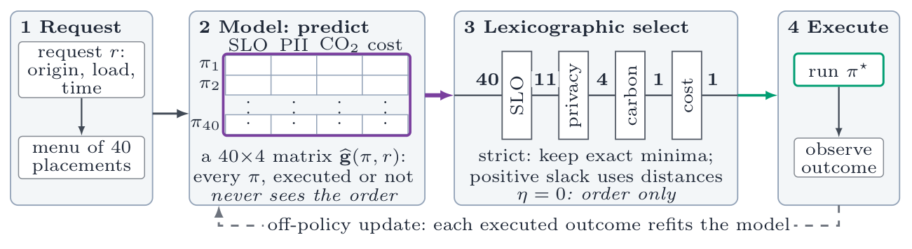
A Failure-Mode Taxonomy for LLM-Agent Services: An Empirical Mining Study
ICSOC 2026 CORE A Acceptance rate 26.7% (64/240)
Abstract for A Failure-Mode Taxonomy for LLM-Agent Services: An Empirical Mining Study
Abstract summary
FMTAX classifies failures reported in LLM-agent framework repositories using 22 categories across seven groups. The study finds that many agent-specific failures occur at boundaries with tools or model providers and maps common failures to candidate resilience techniques.
BibTeX for A Failure-Mode Taxonomy for LLM-Agent Services: An Empirical Mining Study
@inproceedings{agentfailuretaxonomy2026,
title={{A Failure-Mode Taxonomy for LLM-Agent Services: An Empirical Mining Study}},
author={P. T. Tran-Truong and Xuan-Bach Le and Xuan Son Ha},
booktitle={International Conference on Service-Oriented Computing (ICSOC)},
year={2026},
note={Accepted for publication},
url={https://lexuanbach.github.io/publication/ICSOC2026e.pdf}
}Figure

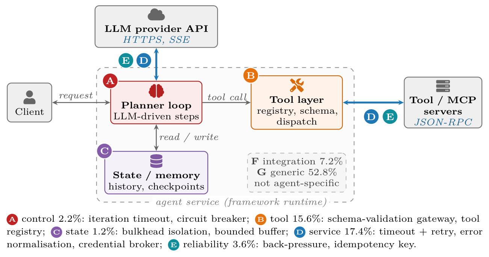
ACaaS: Privacy-Preserving Access Control as a Service for Healthcare on the Cloud-Edge Continuum
ICSOC 2026 CORE A Acceptance rate 26.7% (64/240)
Abstract for ACaaS: Privacy-Preserving Access Control as a Service for Healthcare on the Cloud-Edge Continuum
Abstract summary
ACaaS splits healthcare authorization into cloud and edge services, with lightweight policy decisions near the data. It minimizes sensitive records before transmission and uses a permissioned ledger to synchronize policy versions. The evaluation examines policy tampering, re-identification, and operation during network outages.
BibTeX for ACaaS: Privacy-Preserving Access Control as a Service for Healthcare on the Cloud-Edge Continuum
@inproceedings{acaas2026,
title={{ACaaS: Privacy-Preserving Access Control as a Service for Healthcare on the Cloud-Edge Continuum}},
author={Xuan Son Ha and P. T. Tran-Truong and Xuan-Bach Le and Minh B. Nguyen and Thanh Pham},
booktitle={International Conference on Service-Oriented Computing (ICSOC)},
year={2026},
note={Accepted for publication},
url={https://lexuanbach.github.io/publication/ICSOC2026d.pdf}
}Figure

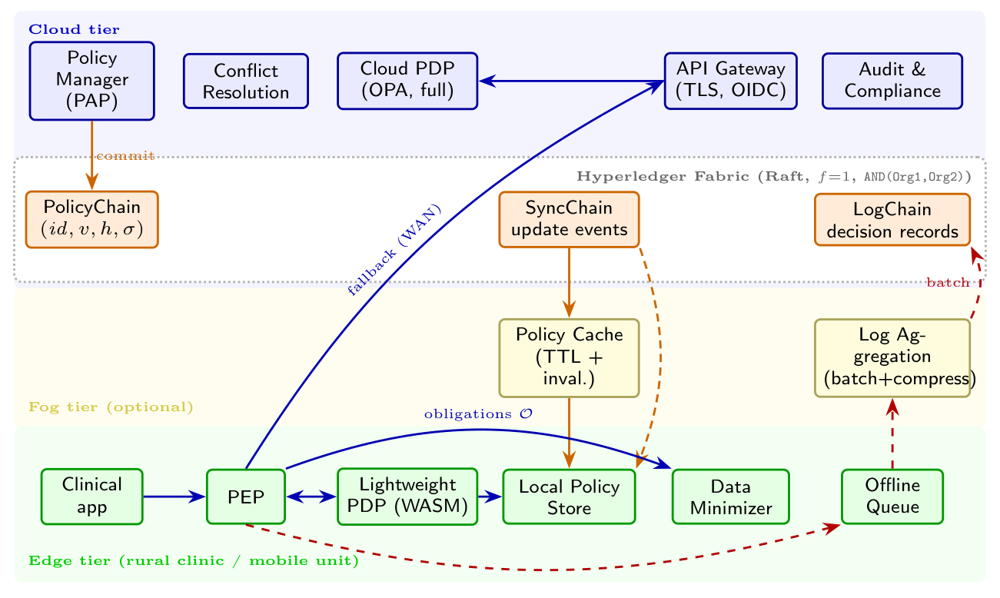
When Grounding Hurts: Retrieval and Validation for LLM Repair of Quantum Programs
ICECCS 2026 CORE B
Abstract for When Grounding Hurts: Retrieval and Validation for LLM Repair of Quantum Programs
Abstract summary
The paper combines static analysis, retrieved defect knowledge, and execution checks for repairing Qiskit programs. Grounding helps with API migration defects but can reduce repair accuracy for some semantic defects, showing that the value of retrieved guidance depends on the defect type.
BibTeX for When Grounding Hurts: Retrieval and Validation for LLM Repair of Quantum Programs
@inproceedings{quantumprogramrepair2026,
title={{When Grounding Hurts: Retrieval and Validation for LLM Repair of Quantum Programs}},
author={Xuan-Bach Le and P. T. Tran-Truong and Duy Nguyen},
booktitle={International Conference on Engineering of Complex Computer Systems (ICECCS)},
year={2026},
note={Accepted for publication},
url={https://lexuanbach.github.io/publication/ICECCS2026.pdf}
}Figure

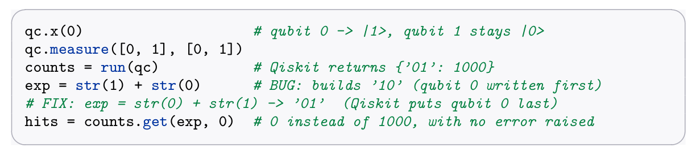
Bahnar-Vietnamese Parallel-Sentence Retrieval: A Low-Resource Case Study with Lexical, Neural, and Hybrid Methods
AACL-IJCNLP 2026 IJCNLP CORE B
Abstract for Bahnar-Vietnamese Parallel-Sentence Retrieval: A Low-Resource Case Study with Lexical, Neural, and Hybrid Methods
Abstract summary
The authors compare lexical, neural, and hybrid methods for retrieving parallel Bahnar–Vietnamese sentences. A neural-first hybrid achieves the highest recall point estimate, though the study does not establish a significant improvement over the strongest lexical baseline.
BibTeX for Bahnar-Vietnamese Parallel-Sentence Retrieval: A Low-Resource Case Study with Lexical, Neural, and Hybrid Methods
@inproceedings{bahnarparallelretrieval2026,
title={{Bahnar-Vietnamese Parallel-Sentence Retrieval: A Low-Resource Case Study with Lexical, Neural, and Hybrid Methods}},
author={Thi Ty Nguyen and Long S. T. Nguyen and P. T. Tran-Truong and Tan Sang Nguyen and Tho T. Quan},
booktitle={AACL-IJCNLP 2026},
year={2026},
note={Accepted for publication},
url={https://drive.google.com/file/d/1JQtAz8S8-tbLnoUhn8jw_zKaf-T72_ob/view?usp=sharing}
}Figure

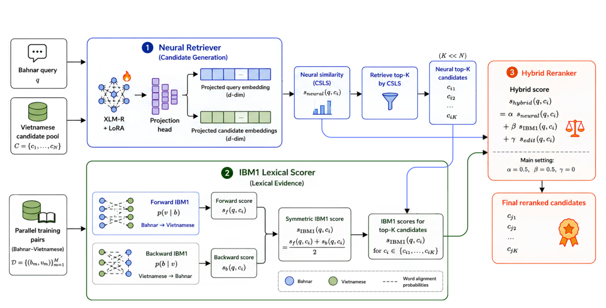
Leveraging Code Slicing for LLMs-Based Malicious NPM Package Detection
ARES 2026 International Workshops, pp. 22–39 ARES CORE B Acceptance rate 43.5% (101/232)
Abstract for Leveraging Code Slicing for LLMs-Based Malicious NPM Package Detection
Earlier preprint summary
The study uses taint-based program slicing to isolate security-relevant JavaScript for LLM-based detection of malicious npm packages. On packages that can be analyzed statically, the approach reduces input length and improves detection accuracy relative to token splitting and a control-flow-only baseline.
BibTeX for Leveraging Code Slicing for LLMs-Based Malicious NPM Package Detection
@inproceedings{npmdetection2026,
title={{Leveraging Code Slicing for LLMs-Based Malicious NPM Package Detection}},
author={Dang-Khoa Nguyen and Gia-Thang Ho and Quang-Minh Pham and Tuyet A. Dang-Thi and Minh-Khanh Vu and Thanh-Cong Nguyen and P. T. Tran-Truong and Duc-Ly Vu},
booktitle={Availability, Reliability and Security: ARES 2026 International Workshops},
year={2026},
pages={22--39},
doi={10.1007/978-3-032-35576-8_2}
}Figure

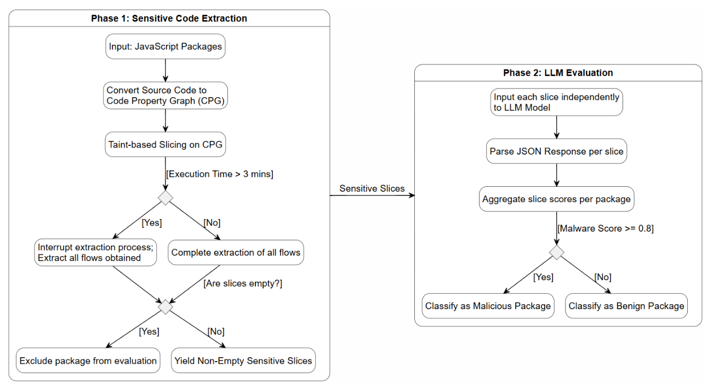
Exploring the Reasoning Depth of Small Language Models in Software Architecture: A Multidimensional Evaluation Framework Towards Software Engineering 2.0
IEEE ICSA-C 2026 Companion proceedings, pp. 71–78 ICSA CORE A
Abstract for Exploring the Reasoning Depth of Small Language Models in Software Architecture: A Multidimensional Evaluation Framework Towards Software Engineering 2.0
In the era of ”Software Engineering 2.0” (SE 2.0), where intelligent agents collaborate with human engineers, Generative AI is advancing beyond code generation into Software Architecture (SA). While Large Language Models (LLMs) demonstrate superior capabilities, computational costs and data privacy concerns drive interest in Small Language Models (SLMs) with fewer than 7 billion parameters. However, the reasoning limits of these resource-constrained models remain unexplored. This study benchmarks 10 state-of-the-art SLMs on Architectural Decision Records generation, introducing a multi-dimensional framework evaluating Technical Compliance and Semantic Diversity. Our empirical results reveal a significant reasoning gap: models above the 3B-parameter threshold demonstrate robust zero-shot capabilities, while sub-2B models show the strongest BERTScore gains from Fine-Tuning, though compliance improvements are not guaranteed. Contrary to assumptions regarding context saturation, Few-Shot prompting serves as a highly effective calibration mechanism for select mid-sized models with short context windows. Furthermore, high semantic diversity in offthe-shelf small models often correlates with hallucination rather than productive exploration. These findings establish a rigorous baseline for deploying sustainable, locally hosted architectural assistants.
BibTeX for Exploring the Reasoning Depth of Small Language Models in Software Architecture: A Multidimensional Evaluation Framework Towards Software Engineering 2.0
@inproceedings{vo2026exploring,
title={{Exploring the Reasoning Depth of Small Language Models in Software Architecture: A Multidimensional Evaluation Framework Towards Software Engineering 2.0}},
author={Ha Vo and Nhut Tran and Khang Vo and P. T. Tran-Truong and Son Ha},
booktitle={IEEE International Conference on Software Architecture Companion (ICSA-C)},
year={2026},
pages={71--78},
doi={10.1109/ICSA-C68850.2026.00020}
}Figure

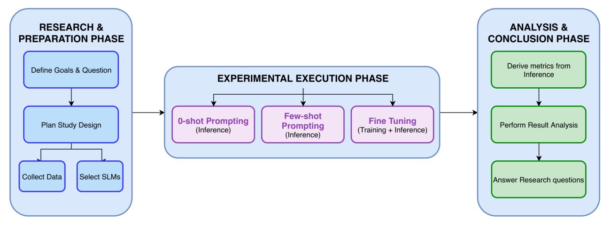
Sentence-Aware Bahnaric-Vietnamese Lexical Mapping with Contrastive Contextual Representations
AAAI 2026 LM4UC workshop AAAI CORE A*
Abstract for Sentence-Aware Bahnaric-Vietnamese Lexical Mapping with Contrastive Contextual Representations
Underserved and extremely low-resource languages challenge current language technologies, especially when lexical borrowing and synonymy undermine exact-match assumptions. We study Bahnaric-Vietnamese lexical mapping as a step toward meaning-preserving sentence translation. Unlike prior work based on static embeddings and Mean Squared Error (MSE) alignment, we learn sentence-aware word representations with a small multilingual transformer pretrained on Vietnamese, adapt it with Low-rank adaptation (LoRA) for parameter efficiency, and align Bahnaric-Vietnamese pairs using a two-layer projection trained with InfoNCE contrastive loss. We exploit a new community-sourced lexicon of approximately 10,000 Bahnaric-Vietnamese pairs collected with local partners, capturing one-to-one, one-to-many, and many-to-one anchor relations as well as extensive lexical borrowing. Experiments evaluate retrieval-style alignment with Precision at K (P@K) and Mean Reciprocal Rank (MRR), as well as sentence translation using top-1 accuracy, Bilingual Evaluation Understudy (BLEU), Character n-gram F-score (ChrF), and embedding-based BERTScore. We also qualitatively analyze cases where n-gram metrics under-credit semantically adequate outputs in synonym-rich settings, and our ablation analysis shows that InfoNCE contrastive training dramatically outperforms MSE regression. On the 1k lexicon, our best model attains P@1 and MRR , substantially improving over a static-embedding MSE baseline, while on the richer 10k community lexicon it reaches comparable sentence-level top-1 accuracy and BERTScore F1 despite slightly lower BLEU and chrF, highlighting both the benefits of the expanded resource and the remaining challenges of synonym-rich, low-frequency vocabulary.
BibTeX for Sentence-Aware Bahnaric-Vietnamese Lexical Mapping with Contrastive Contextual Representations
@inproceedings{nguyen2026sentence,
title={{Sentence-Aware Bahnaric-Vietnamese Lexical Mapping with Contrastive Contextual Representations}},
author={Thi Ty Nguyen and P. T. Tran-Truong and Long Nguyen and Tan Sang Nguyen and Tho Quan},
booktitle={Workshop on Language Models for Underserved Communities (LM4UC), AAAI 2026},
year={2026},
url={https://openreview.net/forum?id=JnDLZSEwOD}
}Figure

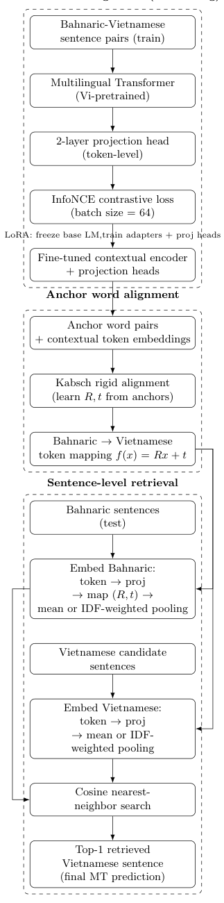
SLIE: A Secure and Lightweight Cryptosystem for Data Sharing in IoT Healthcare Services
ICSOC 2025 pp. 225–233 CORE A Acceptance rate 28.8% (63/219)
Abstract for SLIE: A Secure and Lightweight Cryptosystem for Data Sharing in IoT Healthcare Services
The Internet of Medical Things (IoMT) has revolutionized healthcare by transforming medical operations into standardized, interoperable services. However, this service-oriented model introduces significant security vulnerabilities in device management and communication, which are especially critical given the sensitivity of medical data. To address these risks, this paper proposes SLIE (Secure and Lightweight Identity Encryption), a novel cryptosystem based on Wildcard Key Derivation Identity-Based Encryption (WKD-IBE). SLIE ensures scalable trust and secure omnidirectional communication through end-to-end encryption, hierarchical access control, and a lightweight key management system designed for resource-constrained devices. It incorporates constanttime operations, memory obfuscation, and expiry-based key revocation to counter side-channel, man-in-the-middle, and unauthorized access attacks, thereby ensuring compliance with standards like HIPAA and GDPR. Evaluations show that SLIE significantly outperforms RSA, with encryption and decryption times of 0.936ms and 0.217ms for 1KB of data, an 84.54% improvement in encryption speed, a 99.70% improvement in decryption speed, and an energy efficiency of 0.014 J/KB.
BibTeX for SLIE: A Secure and Lightweight Cryptosystem for Data Sharing in IoT Healthcare Services
@inproceedings{son2025slie,
title={{SLIE: A Secure and Lightweight Cryptosystem for Data Sharing in IoT Healthcare Services}},
author={Ha Xuan Son and Nguyen Quoc Anh and P. T. Tran-Truong and Le Thanh Tuan and Pham Thanh Nghiem},
booktitle={International Conference on Service-Oriented Computing (ICSOC)},
year={2025},
pages={225--233},
url={https://arxiv.org/abs/2510.14708}
}Figure

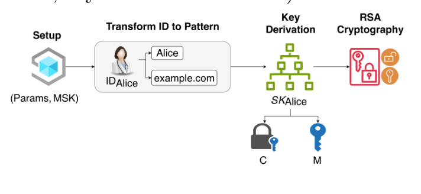
Riding on the Back of a Whale: A Hackathon Framework for Introducing High School Students to Large Language Models
AIED 2025 Companion proceedings, pp. 201–209 AIED CORE A Acceptance rate 49% (145/296)
Abstract for Riding on the Back of a Whale: A Hackathon Framework for Introducing High School Students to Large Language Models
As large language models (LLMs) become more integrated into daily life, it is crucial to foster AI literacy among high school students. However, most AI courses target college-level learners and assume prior knowledge, while high schools often lack the foundational curriculum and infrastructure for traditional LLM education. To bridge this gap, we present a hackathon-based framework that makes LLM learning accessible, engaging, and hands-on. The program combines interactive lectures on core LLM concepts with a guided competition where students fine-tune models and build real-world applications, such as healthcare chatbots. This approach boosts motivation, programming skills, and practical understanding. Post-hackathon survey results show students gained both functional LLM experience and foundational knowledge. Furthermore, our framework can be extended to broader audiences, including learners without prior AI/NLP experience, offering a rapid, application-driven introduction to LLMs.
BibTeX for Riding on the Back of a Whale: A Hackathon Framework for Introducing High School Students to Large Language Models
@inproceedings{nguyen2025riding,
title={{Riding on the Back of a Whale: A Hackathon Framework for Introducing High School Students to Large Language Models}},
author={Duc Nguyen and Dong Le and Long Nguyen and Quyen Vu and Tran Le and Dung Nguyen and Nga Huynh and Huong Nguyen and P. T. Tran-Truong and Dang Le and Sang Truong and Sanmi Koyejo and Cuong Le and Tho Quan},
booktitle={International Conference on Artificial Intelligence in Education (AIED), Companion},
year={2025},
pages={201--209},
doi={10.1007/978-3-031-99264-3_25}
}GADA: An Adaptive Genetic Algorithm-Based Framework for Dynamic University Course Timetabling
IJCCI 2025 Marbella CORE C Acceptance rate 81.5% (119/146)
Abstract for GADA: An Adaptive Genetic Algorithm-Based Framework for Dynamic University Course Timetabling
The University Course Timetabling Problem (UCTP) is a well-known NP-hard multi-objective optimization problem influenced by variety of factors ranging from institutional policies and facilities, institutional facilities, course characteristics to instructor availability, instructor preferences and the diversity and variability of student registration behaviors. This paper introduces GADA, a novel approach to automate course timetabling. Unlike traditional models that mostly assume static, centralized scheduling, GADA is an adaptive geneticalgorithm-based approach tailored for decentralized, credit-based systems where students independently register for courses and instructors have diverse time preferences. GADA focuses on optimizing course-to-timeslot allocation while satisfying both hard institutional constraints and soft instructor preferences. By automating critical steps in the scheduling workflow, GADA significantly reduces manual effort, increases scheduling flexibility, and adapts efficiently to late-stage registration changes. It has been implemented and evaluated extensively in the real-world environment at the Faculty of Computer Science and Engineering at Ho Chi Minh City University of Technology (CSE@HCMUT). The experimental results demonstrate GADA’s effectiveness and practical applicability in generating conflict-free and operationally feasible schedules while addressing the complex constraints inherent in decentralized academic timetabling.
BibTeX for GADA: An Adaptive Genetic Algorithm-Based Framework for Dynamic University Course Timetabling
@inproceedings{nguyen2025gada,
title={GADA: An Adaptive Genetic Algorithm-Based Framework for Dynamic University Course Timetabling},
author={Nguyen, Minh Tam and Tran-Truong, Phat T and Truong, Anh Tuan},
booktitle={International Joint Conference on Computational Intelligence},
pages={164--180},
year={2025},
organization={Springer}
}Decoding the Privacy Policy Implications of Personal Data Processing: A Framework for GDPR Compliance
ICSOC Workshops 2024 Tunis ICSOC CORE A Acceptance rate 56% (61/109)
Abstract for Decoding the Privacy Policy Implications of Personal Data Processing: A Framework for GDPR Compliance
The proliferation of business and social mobile apps has led to an unprecedented surge in personal data processing, raising significant privacy concerns. While the General Data Protection Regulation (GDPR) provides a legal framework for data protection, many app developers struggle to create clear and concise privacy policies that effectively communicate their data practices to users. Existing privacy policy analysis methods, primarily focused on legal compliance, often overlook the qualitative aspects that are crucial for user trust and understanding. To address this gap, this paper introduces GenAI, a novel generative AI model designed to delve deeper into privacy policies and assess their quality against the principles outlined in GDPR Article 5 - “Principles relating to processing of personal data”. GenAI transcends traditional compliance checks by categorizing privacy policies based on “Good" and “Bad" standards, aligning with the GDPR’s core principles. This comprehensive evaluation encompasses both legal compliance and qualitative factors, providing a more nuanced understanding of privacy practices. To validate our approach, we conducted a rigorous analysis of 100 business and 100 social apps, revealing valuable insights into the current state of privacy policy quality. By doing this, our research aims to contribute to a future where privacy policies are not merely legal necessities but fundamental pillars of trust between app developers and users.
BibTeX for Decoding the Privacy Policy Implications of Personal Data Processing: A Framework for GDPR Compliance
@inproceedings{tran2024decoding,
title={Decoding the Privacy Policy Implications of Personal Data Processing: A Framework for GDPR Compliance in Business and Social Apps},
author={Tran-Truong, Phat Tuan and Pham, Nghiem Thanh and Tuan, Trung Phan Hoang and Quoc, Bao Tran and Ba, Nam Tran and Kim, Ngan Nguyen Thi and Minh, Hieu Doan and Gia, Khiem Huynh},
booktitle={International Conference on Service-Oriented Computing},
pages={194--205},
year={2024},
organization={Springer}
}Decentralizing Energy Trading for Electric Vehicles using Blockchain Technology
PDCAT 2024 Hong Kong CORE C Acceptance rate 48.2% (55/114)
Abstract for Decentralizing Energy Trading for Electric Vehicles using Blockchain Technology
The increasing adoption of electric vehicles (EVs) and integration of renewable energy sources present challenges in energy management and trading that require innovative approaches beyond traditional centralized models. This paper examines the efficacy of employing blockchain technology, the InterPlanetary File System (IPFS), and RSA-encrypted Non-Fungible Tokens (NFTs) to create a decentralized energy trading management system for EVs. By leveraging these technologies, the proposed system addresses the lack of transparency and inefficiencies in traditional models by ensuring secure, transparent, and efficient interactions among energy producers, consumers, and grid operators. The financial viability of implementing this system is evaluated by analyzing transaction fees across various Ethereum Virtual Machine (EVM)-compatible platforms including BNB chain, Fantom, Polygon and Celo for stimulating and identifying cost-effective solutions for the integration of these advanced technologies.
BibTeX for Decentralizing Energy Trading for Electric Vehicles using Blockchain Technology
@inproceedings{tran2024decentralizing,
title={Decentralizing Energy Trading for Electric Vehicles Using Blockchain Technology},
author={Tran-Truong, Phat T and Trung, Phan Hoang Tuan and Bang, Le K},
booktitle={International Conference on Parallel and Distributed Computing: Applications and Technologies},
pages={541--552},
year={2024},
organization={Springer}
}Money Laundering Detection using A Transaction-based Graph Learning Approach
IMCOM 2024 Kuala Lumpur Acceptance rate 39.3%
Abstract for Money Laundering Detection using A Transaction-based Graph Learning Approach
Money laundering poses a pervasive threat to the stability and integrity of global financial systems. Since traditional anti-money laundering (AML) methods predominantly rely on rule-based systems and statistical approaches, it has limitations to capture the intricate and interconnected relationships that is inherent in money laundering networks. In response to this challenge, this paper proposes an innovative approach to enhance money laundering detection through transactions. We begin by constructing network graphs from a large dataset of bank transactions. Drawing insights from language modeling and supervised learning, we transform these graphs into directed node representations that effectively encode these intricate relationships and community structures within the transaction network. Subsequently, we utilize Random Forest (RF) to predict suspicious behavior associated with money laundering. Additionally, we address the specific challenges posed by highly imbalanced classes in the context of money laundering detection through both oversampling and undersampling experiments to overcome these challenges. The predictive performance of the RF model with oversampling yielded an accuracy of 86%, whereas when undersampling was applied, the accuracy increased to 92%.
BibTeX for Money Laundering Detection using A Transaction-based Graph Learning Approach
@inproceedings{huong2024money,
title={Money laundering detection using a transaction-based graph learning approach},
author={Huong, Huu and Nguyen, Xuan and Dang, Tran Khanh and Tran-Truong, Phat T},
booktitle={2024 18th International Conference on Ubiquitous Information Management and Communication (IMCOM)},
pages={1--8},
year={2024},
organization={IEEE}
}An Enhanced Incentive Mechanism for Crowdsourced Federated Learning Based on Contract Theory and Shapley Value
FDSE 2023 Da Nang Acceptance rate 34.1% (46/135)
Abstract for An Enhanced Incentive Mechanism for Crowdsourced Federated Learning Based on Contract Theory and Shapley Value
Federated learning is a recently dominant learning method for crowdsourced learning systems with diverse scales. It plays a pivotal role in smart city operation technologies, such as cross-organization (e.g., hospitals, banks, etc.), Mobile Ad hoc networks (MANETs), Mobile Edge Computing (MEC), Vehicle Ad hoc Networks (VANETs), and Internet of Things (IoTs). Specifically, this method aggregates a global model from local models trained on the private data of clients. To achieve high accuracy and collaborate effectively, federated learning-based crowdsourced systems need to attract sufficient quality clients. Therefore, a proper incentive mechanism is essential to motivate clients to join and contribute to the best of their ability. However, it is challenging to design such a mechanism due to the fact that each client has different system resources, data size, and effort. This implies that if the incentive mechanism is not well-designed, it will lead to a moral hazard situation, where clients may free-ride and the overall accuracy of the global model will undergo a downward spiral. Furthermore, the clients who contribute most to the accuracy of the global model are not necessarily those with the most decorated power and dedicated work. To address these challenges, we propose a joint optimization mechanism that leverages contract theory and Shapley value. This mechanism helps to reveal private information about clients and quantify their contribution to the global model, so that a suitable and equitable incentive can be constituted for each client.
BibTeX for An Enhanced Incentive Mechanism for Crowdsourced Federated Learning Based on Contract Theory and Shapley Value
@inproceedings{dang2023enhanced,
title={An enhanced incentive mechanism for crowdsourced federated learning based on contract theory and shapley value},
author={Dang, Tran Khanh and Tran-Truong, Phat T and Trang, Nguyen Thi Huyen},
booktitle={International Conference on Future Data and Security Engineering},
pages={18--33},
year={2023},
organization={Springer}
}Data Poisoning Attack on Deep Neural Network and Some Defense Methods
ACOMP 2020 Quy Nhon
Abstract for Data Poisoning Attack on Deep Neural Network and Some Defense Methods
Abstract summary
This paper reviews how manipulated training data can compromise deep neural networks and surveys defenses against data poisoning. It discusses open challenges and research directions for more robust learning systems.
BibTeX for Data Poisoning Attack on Deep Neural Network and Some Defense Methods
@inproceedings{dang2020data,
title={Data poisoning attack on deep neural network and some defense methods},
author={Dang, Tran Khanh and Truong, Phat T Tran and Tran, Pi To},
booktitle={2020 International Conference on Advanced Computing and Applications (ACOMP)},
pages={15--22},
year={2020},
organization={IEEE}
}Journal articles
Published and accepted journal articles
Conspicuity collapse: Escalating broadcast on surveillance failure bounds low-altitude airspace density
Ad Hoc Networks 196, article 104457 SCIE 2025 IF 5.4 Online
Abstract for Conspicuity collapse
Abstract summary
The study links the capacity of a shared surveillance channel to safe aircraft separation and the density of low-altitude traffic. It derives a threshold beyond which faster broadcasts during surveillance failures can trigger a feedback loop that worsens congestion. Simulations of nine broadcast schemes show that keeping contingency airtime neutral can improve separation and eliminate the observed congestion hysteresis.
BibTeX for Conspicuity collapse
@article{trantruong2027conspicuity,
title={Conspicuity collapse: Escalating broadcast on surveillance failure bounds low-altitude airspace density},
author={Tran-Truong, Phat T. and Son, Ha X. and Nguyen-Ngoc, Phien and Nguyen, Tung Q. and Nguyen, Nhan T.K. and Tran, Huy G. and Nguyen, Thuc M. and Nguyen, Triet M. and Vo, Khanh H.},
journal={Ad Hoc Networks},
year={2027},
volume={196},
pages={104457},
doi={10.1016/j.adhoc.2026.104457}
}Figure

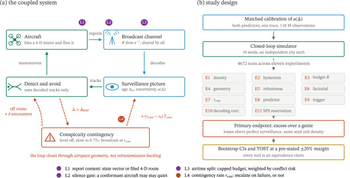
Trust-Gated Robust Median: Root-Free Defense Against Backdoor Attacks in Non-IID Federated Learning
Journal of Information Security and Applications SCIE 2025 IF 4.4
Abstract for Trust-Gated Robust Median: Root-Free Defense Against Backdoor Attacks in Non-IID Federated Learning
Research artifact summary
The reproduction package accompanies a root-free approach to robust aggregation for federated learning with non-IID client data. It includes experiments that compare trust-gated median aggregation with defense baselines under several backdoor attack settings.
BibTeX for Trust-Gated Robust Median: Root-Free Defense Against Backdoor Attacks in Non-IID Federated Learning
@article{trustgatedmedian2026,
title={{Trust-Gated Robust Median: Root-Free Defense Against Backdoor Attacks in Non-IID Federated Learning}},
author={Phat T. Tran-Truong and Ha X. Son and Phien Nguyen-Ngoc and Nhan T. K. Nguyen and Thuc M. Nguyen and Huy G. Tran and Trung H. T. Phan},
journal={Journal of Information Security and Applications},
year={2026},
note={Accepted for publication}
}RelationalRAG-Tables: A Learned Join Verifier for QA over Tables and Knowledge Graphs
Machine Learning SCIE 2025 IF 4.9
Abstract for RelationalRAG-Tables: A Learned Join Verifier for QA over Tables and Knowledge Graphs
Abstract summary
RelationalRAG-Tables uses a learned verifier to test candidate joins between relational tables and knowledge graphs. The system tries alternative joins after rejection and can abstain when uncertain. Its evaluation shows that direct join verification can reduce incorrect answers returned without abstention.
BibTeX for RelationalRAG-Tables: A Learned Join Verifier for QA over Tables and Knowledge Graphs
@article{relationalragtables2026,
title={{RelationalRAG-Tables: A Learned Join Verifier for QA over Tables and Knowledge Graphs}},
author={Xuan-Bach Le and P. T. Tran-Truong and Son Ha Xuan},
journal={Machine Learning},
year={2026},
note={Accepted for publication},
url={https://lexuanbach.github.io/publication/ACML2026.pdf}
}Figure

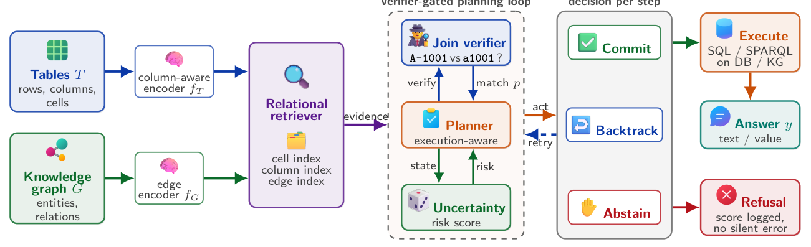
Within-Pipeline Gains, Proximity-Bound Real-World Detection: A Leakage-Resistant, Provenance-Audited Evaluation of Rewrite Augmentation for Phishing Detection
Expert Systems with Applications SCIE 2025 IF 9.4
Abstract for Within-Pipeline Gains, Proximity-Bound Real-World Detection: A Leakage-Resistant, Provenance-Audited Evaluation of Rewrite Augmentation for Phishing Detection
Abstract summary
The study tests whether rewriting training emails improves phishing detection when variants from the same source are kept together across splits. Augmentation helps within the same generation pipeline, but performance on external and human-authored mail depends strongly on how closely the target data matches the training data.
BibTeX for Within-Pipeline Gains, Proximity-Bound Real-World Detection: A Leakage-Resistant, Provenance-Audited Evaluation of Rewrite Augmentation for Phishing Detection
@article{phishingrewriteaudit2026,
title={{Within-Pipeline Gains, Proximity-Bound Real-World Detection: A Leakage-Resistant, Provenance-Audited Evaluation of Rewrite Augmentation for Phishing Detection}},
author={P. T. Tran-Truong and Ha X. Son and Duy D. X. Pham and Triet M. Nguyen and Khanh H. Vo and Phien Nguyen- Ngoc},
journal={Expert Systems with Applications},
year={2026},
note={Accepted for publication},
doi={10.1016/j.eswa.2026.134963}
}Figure

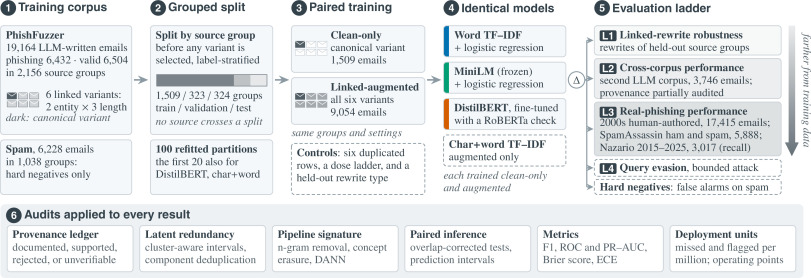
Privacy-Preserving Computation in Financial Systems: A Systematic Survey and Quantitative Analysis
Information Systems 142, article 102777 SCIE 2025 IF 4.0
Abstract for Privacy-Preserving Computation in Financial Systems: A Systematic Survey and Quantitative Analysis
Abstract summary
The survey reviews 90 studies on privacy-preserving computation for financial applications. It organizes the methods by technique and application, compares performance across five settings, and examines trade-offs among privacy guarantees, computational cost, and regulatory requirements.
BibTeX for Privacy-Preserving Computation in Financial Systems: A Systematic Survey and Quantitative Analysis
@article{financialprivacysurvey2026,
title={{Privacy-Preserving Computation in Financial Systems: A Systematic Survey and Quantitative Analysis}},
author={Trung Nguyen-Nam and P. T. Tran-Truong and Phien Nguyen-Ngoc and Ha X. Son and Trung H. T. Phan and Tien Thuan Nguyen and Khoa H. Le and Chan G. Nguyen},
journal={Information Systems},
year={2026},
volume={142},
pages={102777},
doi={10.1016/j.is.2026.102777}
}Figure

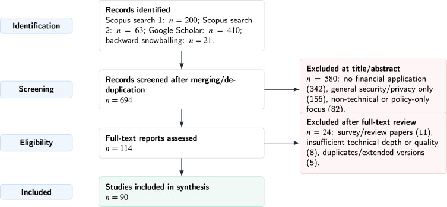
Systematic Review on Privacy-Preserving Architectures for IoT and Vehicular Data Sharing: Techniques, Challenges, and Future Directions
Ad Hoc Networks 192, article 104325 SCIE 2025 IF 5.4
Abstract for Systematic Review on Privacy-Preserving Architectures for IoT and Vehicular Data Sharing: Techniques, Challenges, and Future Directions
The proliferation of IoT and V2X systems generates unprecedented sensitive data at the network edge, demanding privacy-preserving architectures that enable secure sharing without exposing raw information. Contemporary solutions face a fundamental privacy-efficiency-trust trilemma: achieving strong privacy guarantees, computational efficiency for resource-constrained devices, and decentralized trust simultaneously remains intractable with single-paradigm approaches. This survey systematically analyzes 75 technical papers (2007–2025) through a novel three-dimensional taxonomy classifying architectures into Decentralized Computation, Cryptography-based, and Distributed Ledger approaches. Temporal analysis reveals dramatic acceleration during 2024–2025, with 48% of all papers published in this period – Decentralized Computation dominates at 44% of contributions and 59% of 2025 publications. Comprehensive Security Threat Mapping and Technology Maturity Assessment demonstrate that mature solutions occupy narrow design regions excelling in one or two dimensions while compromising others, conclusively validating the trilemma hypothesis. We identify emerging hybrid architectures combining complementary paradigms as the essential path forward. Critical challenges including security guarantee composition across layers, multi-layer coordination overhead minimization, and post-quantum security integration must be addressed for practical deployment in next-generation intelligent transportation systems and IoT ecosystems.
BibTeX for Systematic Review on Privacy-Preserving Architectures for IoT and Vehicular Data Sharing: Techniques, Challenges, and Future Directions
@article{tran2026privacyarchitectures,
title={{Systematic Review on Privacy-Preserving Architectures for IoT and Vehicular Data Sharing: Techniques, Challenges, and Future Directions}},
author={P. T. Tran-Truong and Vinh X. Q. Nguyen and Ha X. Son and Phien Nguyen-Ngoc and Khanh H. Vo and Triet M. Nguyen},
journal={Ad Hoc Networks},
year={2026},
volume={192},
pages={104325},
doi={10.1016/j.adhoc.2026.104325}
}Figure

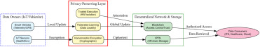
WasteWhisperer: Ephemeral Delegations in Eco-City Cleanup
Pervasive and Mobile Computing 122, article 102248 SCIE 2025 IF 3.9
Abstract for WasteWhisperer: Ephemeral Delegations in Eco-City Cleanup
Abstract summary
WasteWhisperer uses hierarchical identity-based encryption to grant short-lived access to IoT waste bins by collection route and shift. Wildcard policies reduce the need to issue separate credentials for every bin. The evaluation examines the performance and security trade-offs of the design.
BibTeX for WasteWhisperer: Ephemeral Delegations in Eco-City Cleanup
@article{wastewhisperer2026,
title={{WasteWhisperer: Ephemeral Delegations in Eco-City Cleanup}},
author={Trung Nguyen-Nam and P. T. Tran-Truong and Ha X. Son and Phien Nguyen-Ngoc and Tung Nguyen and Khanh Vo and Phat Lam and Triet Nguyen and Anh Le},
journal={Pervasive and Mobile Computing},
year={2026},
volume={122},
pages={102248},
doi={10.1016/j.pmcj.2026.102248}
}Figure

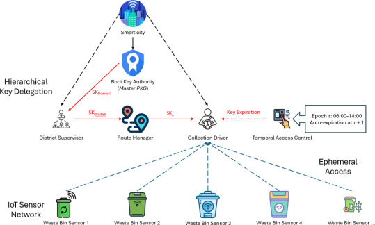
POP2TIC: Performance Optimization for Privacy-Preserving Fog Computing Using TEE and Intelligent Caching
Journal of Network and Computer Applications 250, article 104478 SCIE 2025 IF 7.7
Abstract for POP2TIC: Performance Optimization for Privacy-Preserving Fog Computing Using TEE and Intelligent Caching
Fog computing enables low-latency services by positioning computational resources at the network edge but processing sensitive data on distributed and potentially untrusted nodes raises significant privacy concerns. While Trusted Execution Environments (TEEs) provide hardware-enforced security, they introduce substantial performance overhead (18-68ms cold start latency). Conversely, intelligent caching strategies optimize performance but assume trusted infrastructure, creating a fundamental gap between security and performance requirements. This paper presents a systematic investigation of privacy-preserving fog computing that integrates TEE-based security with intelligent caching. We synthesize recent advances across TEE privacy solutions, intelligent caching approaches, and integrated frameworks, analyzing trade-offs between security guarantees and performance metrics. Our analysis reveals that existing solutions address either security or performance in isolation, with limited work on joint optimization. We introduce POP2TIC, a four-tier framework combining hash-based caching (98% hit rate, 2128 keyspace) with optimized TEE pooling (8.5 ms warm start). Experimental evaluation demonstrates 3.16 ms average latency (75.3% reduction vs. existing fog solutions) and 91.7% attack detection rate while consuming 135% CPU and 299MB memory.
BibTeX for POP2TIC: Performance Optimization for Privacy-Preserving Fog Computing Using TEE and Intelligent Caching
@article{tran2026pop2tic,
title={{POP2TIC: Performance Optimization for Privacy-Preserving Fog Computing Using TEE and Intelligent Caching}},
author={P. T. Tran-Truong and Trung D. Mai and Ha X. Son and Phien Nguyen-Ngoc and Bang K. Le and Khanh H. Vo and Ngan N. T. Kim and Triet M. Nguyen and Anh T. Nguyen},
journal={Journal of Network and Computer Applications},
year={2026},
volume={250},
pages={104478},
doi={10.1016/j.jnca.2026.104478}
}Figure

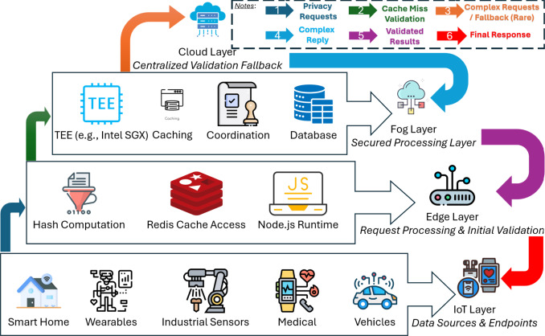
Enhancing Large Language Model Performance for Automatic Zero-Shot Multiple-Choice Question Answering via Single-Token Logit Prompting
Computers & Education: Artificial Intelligence 10, article 100578 ESCI 2025 IF 23.4
Abstract for Enhancing Large Language Model Performance for Automatic Zero-Shot Multiple-Choice Question Answering via Single-Token Logit Prompting
While Large Language Models (LLMs) offer significant potential for educational applications, they exhibit distinct limitations when answering multiple-choice questions (MCQs). Because LLMs are optimized for autoregressive token prediction, their performance degrades substantially when answer choices are simply shuffled—a phenomenon known as the Multiple-Choice Symbol Binding (MCSB) limitation. To mitigate this, we introduce a novel prompting technique called Single-Token Logit (STL). Instead of evaluating the output logits of all answer labels, STL extracts and normalizes the logit value of a single token type (specifically “yes”) to independently verify each option. We comprehensively evaluate STL against established baselines, including Labels Token Logits (LTL) and Chain-of-Thought (CoT), across the ARC, OpenBookQA, and SciQ datasets. In almost all configurations, STL matches or outperforms the standard baseline (LTL)—yielding gains of up to 11 percentage points—at a moderate computational overhead (1.58× latency and 3.72× GPU memory relative to LTL). Furthermore, sample-by-sample McNemar’s testing (α = 0.05) confirms STL is statistically superior to LTL and highly competitive against the computationally expensive CoT method. Finally, we demonstrate STL’s robustness in knowledge-intensive environments by integrating it with Retrieval-Augmented Generation (RAG), where it achieves up to 81.06% accuracy on the combined ARC dataset with Mistral 7B—a 9.36 percentage point gain over the original no-context baseline (LTL) of 71.7%.
BibTeX for Enhancing Large Language Model Performance for Automatic Zero-Shot Multiple-Choice Question Answering via Single-Token Logit Prompting
@article{dang2026enhancing,
title={{Enhancing Large Language Model Performance for Automatic Zero-Shot Multiple-Choice Question Answering via Single-Token Logit Prompting}},
author={Quoc Phu Dang and P. T. Tran-Truong and Duc-Ly Vu and Long S. T. Nguyen and Quynh T. N. Vo and Tho Quan},
journal={Computers \& Education: Artificial Intelligence},
year={2026},
volume={10},
pages={100578},
doi={10.1016/j.caeai.2026.100578}
}Figure

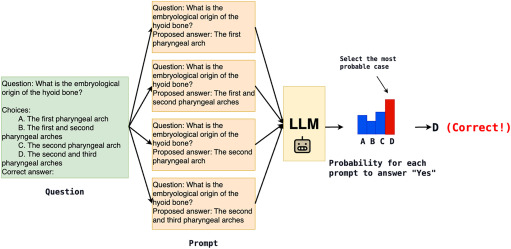
LiteFormer: A Lightweight Encoder-Only Transformer for Efficient Financial Time Series Forecasting Across Global Stock Indices
Engineering Applications of Artificial Intelligence 167, article 113681 SCIE 2025 IF 9.0
Abstract for LiteFormer: A Lightweight Encoder-Only Transformer for Efficient Financial Time Series Forecasting Across Global Stock Indices
Financial time-series forecasting is challenged by non-linear, non-stationary dynamics driven by macroeconomic factors, market sentiment, and stochastic events. Traditional statistical models assume stationarity and linear dependencies, failing to capture complex temporal patterns, while deep learning approaches struggle with vanishing gradients and long-term dependencies. Standard Transformers incur high computational costs (quadratic complexity, O(n^2*d), per layer) due to attention mechanisms and large parameter counts, where n is the sequence length and d is the model dimension. This study proposes LiteFormer, a lightweight, encoder-only Transformer for univariate stock price forecasting, leveraging N=4 encoder layers with h=8 multi-head self-attention and feed-forward networks (d_ff=512). Operating on sequences of closing prices (T=14, d_model=128), LiteFormer employs sinusoidal positional encodings, a causal mask, dropout (p=0.1 ), and layer normalization to model temporal dependencies and enhance generalization. With only 750,000+ parameters, LiteFormer reduces per layer complexity via compact design, thereby enabling low-latency inference (38 millisecond) and energy efficiency (96.894 Watt), which promises to offers scalable real-time inference for industrial fintech systems. Experiments across 30 stocks from the S&P 500, FTSE 100, and Nikkei 225 indices demonstrate Mean Absolute Error and Root Mean Square Error reductions of 3.45%–9.09% over vanilla Transformers and up to 48% over recurrence neural models for high-volatility stocks. LiteFormer’s efficient, interpretable architecture, driven by attention weights, offers a scalable solution with potential for multivariate extensions and real-world multi-modal applications in predictive domain.
BibTeX for LiteFormer: A Lightweight Encoder-Only Transformer for Efficient Financial Time Series Forecasting Across Global Stock Indices
@article{anh2026liteformer,
title={{LiteFormer: A Lightweight Encoder-Only Transformer for Efficient Financial Time Series Forecasting Across Global Stock Indices}},
author={Nguyen Quoc Anh and P. T. Tran-Truong and Ha Xuan Son and Thai Thi Thanh Nhan and Nguyen Ngoc Phien and Trung Phan Hoang Tuan and Ngan Nguyen Thi Kim},
journal={Engineering Applications of Artificial Intelligence},
year={2026},
volume={167},
pages={113681},
note={Part 2},
doi={10.1016/j.engappai.2025.113681}
}Figure

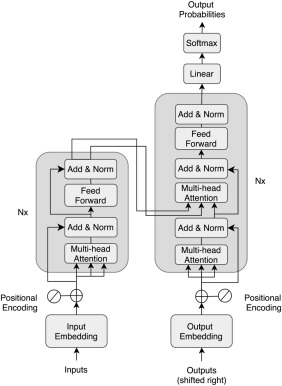
PrivacyGuard: A Hierarchical Privacy-Preserving Framework for IoT-Fog-Cloud Architectures
Computer Networks 278, article 112076 SCIE 2025 IF 4.7
Abstract for PrivacyGuard: A Hierarchical Privacy-Preserving Framework for IoT-Fog-Cloud Architectures
Fog computing enables low-latency IoT applications but introduces critical privacy risks when fog nodes are untrusted. Existing privacy frameworks address cloud security or basic fog encryption, yet none provide comprehensive user-centric privacy enforcement with fine-grained preference composition for distributed IoT-fog-cloud architectures. This paper presents PrivacyGuard, a novel four-tier privacy-preserving framework for personal IoT data protection with untrusted fog infrastructure. Key innovations include: an edge layer for hierarchical privacy preferences with exceptions; GDPR-compliant data and purpose taxonomies supporting fine-grained control; automated privacy preference composition for multi-source data fusion; TEE-based privacy validation enabling secure computation on encrypted data at fog nodes; and hash-based result caching optimized for high-latency rural networks. Empirical results demonstrate sub-100ms P99 latency (97.03ms) for single requests, graceful degradation to 2,059ms under 100 concurrent users, 91.7% MITM resistance, and 6.37× cache speedup.
BibTeX for PrivacyGuard: A Hierarchical Privacy-Preserving Framework for IoT-Fog-Cloud Architectures
@article{tran2026privacyguard,
title={{PrivacyGuard: A Hierarchical Privacy-Preserving Framework for IoT-Fog-Cloud Architectures}},
author={P. T. Tran-Truong and Trung D. Mai and Ha X. Son and Phien Nguyen-Ngoc and Bang K. Le and Khanh H. Vo and Ngan N. T. Kim and Triet M. Nguyen and Anh T. Nguyen},
journal={Computer Networks},
year={2026},
volume={278},
pages={112076},
doi={10.1016/j.comnet.2026.112076}
}Figure

SecureWearTrade: A Comprehensive Blockchain-Enabled IoT Framework for Secure Personal Data Trading from Wearable Devices
Pervasive and Mobile Computing 115, article 102130 SCIE 2025 IF 3.9
Abstract for SecureWearTrade: A Comprehensive Blockchain-Enabled IoT Framework for Secure Personal Data Trading from Wearable Devices
This article introduces SecureWearTrade, a comprehensive blockchain-enabled IoT framework designed to advance secure personal data trading from wearable devices in healthcare. Addressing critical challenges related to security, privacy, and efficiency in resource-constrained environments, our work makes three key contributions: (1) an enhanced hierarchical identity-based encryption (HIBE) scheme with wildcard support, enabling fine-grained and flexible access control tailored to the dynamic needs of healthcare data management; (2) a novel integration of blockchain with IPFS, providing immutable transaction records and efficient key management; and (3) an optimized batch processing mechanism for effectively handling multiple data streams. By comprehensive evaluation with real-world settings with devices and dataset, SecureWearTrade demonstrates superior performance in encryption and decryption efficiency, resource utilization, and scalability compared to existing solutions. Additionally, the framework maintains robust security under the Bilinear Diffie–Hellman Exponent (BDHE) assumption. By ensuring privacy-preserving data trading, SecureWearTrade offers a scalable and trustworthy solution for the IoT-Cloud continuum.
BibTeX for SecureWearTrade: A Comprehensive Blockchain-Enabled IoT Framework for Secure Personal Data Trading from Wearable Devices
@article{tran2025secureweartrade,
title={{SecureWearTrade: A Comprehensive Blockchain-Enabled IoT Framework for Secure Personal Data Trading from Wearable Devices}},
author={P. T. Tran-Truong and Trung D. Mai and Ha X. Son and Phien N. Nguyen and Tuan T. Le and Triet M. Nguyen and Khanh H. Vo and Bang K. Le and Ngan T. K. Nguyen and Minh N. Nguyen and Anh T. Nguyen and Tung Q. Nguyen},
journal={Pervasive and Mobile Computing},
year={2025},
volume={115},
pages={102130},
doi={10.1016/j.pmcj.2025.102130}
}Figure

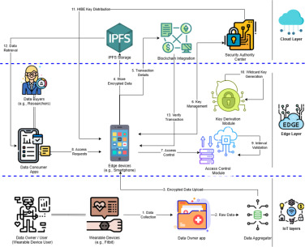
TACKLE: Time-Based Access Control and Key Delegation for Letter of Credit Ecosystems
High-Confidence Computing article 100369 ESCI 2025 IF 9.0
Abstract for TACKLE: Time-Based Access Control and Key Delegation for Letter of Credit Ecosystems
Letters of Credit (L/Cs) are essential for international trade, but traditional systems struggle with security, efficiency, and access control. To address these challenges, we propose TACKLE, a new framework that combines identity-based encryption (IBE) with blockchain technology. TACKLE offers advanced features like time-based access control and hierarchical key delegation, making it ideal for complex international trade workflows. Our framework significantly improves document verification and access management while maintaining strong security. We tested TACKLE’s performance and found it to be efficient, with quick key generation times (68–74 ms) and fast encryption (3.933 to 8.333 s). Network latency was stable at 2–8 ms across different data sizes. Compared to RSA, TACKLE generated keys 34.2% faster while using similar system resources. Our results show that TACKLE effectively balances security with efficiency, making it suitable for typical L/C documents up to 10MB. With its strong security features and performance, TACKLE is a promising solution for modernizing international trade finance.
BibTeX for TACKLE: Time-Based Access Control and Key Delegation for Letter of Credit Ecosystems
@article{tran2025tackle,
title={{TACKLE: Time-Based Access Control and Key Delegation for Letter of Credit Ecosystems}},
author={P. T. Tran-Truong and Ha X. Son and Vo H. Khanh and Nguyen M. Triet and Nguyen T. Anh and Le K. Bang and Nguyen T. K. Ngan},
journal={High-Confidence Computing},
year={2025},
pages={100369},
doi={10.1016/j.hcc.2025.100369}
}Figure

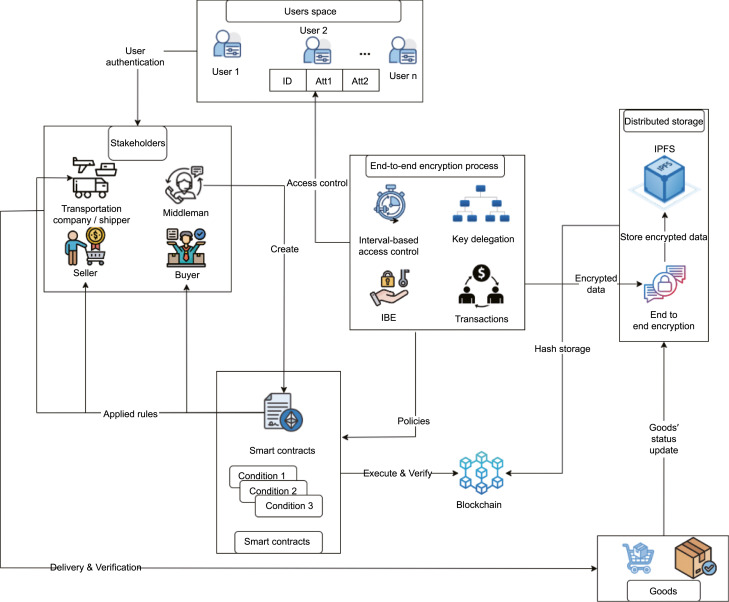
CI2P-MedHFDroid: A Context-Aware Individual Privacy Preferences Model for Medical, Health and Fitness Android Apps
International Journal of Information Security 24(4), article 176 SCIE 2025 IF 5.0
Abstract for CI2P-MedHFDroid: A Context-Aware Individual Privacy Preferences Model for Medical, Health and Fitness Android Apps
The widespread adoption of medical, health, and fitness applications (MedHF apps) has revolutionized health monitoring but also raised critical privacy concerns. Studies revealed that 79% of popular health apps share sensitive user data (e.g., medical records, location) with third parties without transparent consent (bmj 364, 2019), while overly complex privacy policies further obscure data practices. To address these challenges, this article introduces CI2P-MedHFDroid, a context-aware privacy protection model for Android MedHF apps that captures individual privacy preferences across various contexts, including app categories, data types (e.g., location, health metrics), sharing recipients (e.g., third parties), and usage purposes (e.g., advertising). Our research involves analyzing 1,756 medical and 1,646 health & fitness apps through static source code and NLP-based privacy policy analysis, resulting in a comprehensive app database. Leveraging semi-supervised learning with AdaBoost, EM, and TSVM, our model achieves up to 92.7% accuracy, with 77% of 100 diverse participants expressing high satisfaction with TSVM predictions. Additionally, we provide insights into app privacy behaviors, empowering developers to design transparent, user-centric privacy mechanisms. By balancing functionality and privacy, CI2P-MedHFDroid offers a scalable, adaptive solution to enhance trust in healthcare apps.
BibTeX for CI2P-MedHFDroid: A Context-Aware Individual Privacy Preferences Model for Medical, Health and Fitness Android Apps
@article{phien2025ci2p,
title={{CI2P-MedHFDroid: A Context-Aware Individual Privacy Preferences Model for Medical, Health and Fitness Android Apps}},
author={Phien N. Nguyen and P. T. Tran-Truong and Ha X. Son and Vo H. Khanh and Triet M. Nguyen and Luong H. Huong and Bang K. Le and Ngan N. T. K. Nguyen},
journal={International Journal of Information Security},
year={2025},
volume={24},
number={4},
pages={176},
doi={10.1007/s10207-025-01098-w}
}Figure

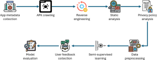
A Systematic Review of Multi-Factor Authentication in Digital Payment Systems: NIST Standards Alignment and Industry Implementation Analysis
Journal of Systems Architecture 162, article 103402 SCIE 2025 IF 5.3
Abstract for A Systematic Review of Multi-Factor Authentication in Digital Payment Systems: NIST Standards Alignment and Industry Implementation Analysis
This survey presents a systematic evaluation of Multi-Factor Authentication (MFA) practices in digital payment systems, analyzing their alignment with NIST Special Publications 800-63 guidelines. Through a comprehensive review of 70 academic papers published between 2017–2024 and 13 industry-based authentication tools, we examine how current implementations measure against Identity Assurance Level (IAL) and Authentication Assurance Level (AAL) standards. Our analysis reveals a significant gap between theoretical capabilities proposed in academic research and actual industry implementations, with 33% of tools relying primarily on OTP-based authentication despite more advanced methods being available. The survey identifies emerging trends like biometric authentication adoption (60% of analyzed papers) and varying regulatory compliance across sectors, with payment systems demonstrating 77% alignment with standards while IoT and E-Service domains show fragmented approaches. We propose a framework for developing adaptive authentication systems that balance security requirements with user experience through context-aware risk assessment. This work provides valuable insights for researchers, practitioners, and policymakers working to enhance the security and usability of digital payment authentication systems.
BibTeX for A Systematic Review of Multi-Factor Authentication in Digital Payment Systems: NIST Standards Alignment and Industry Implementation Analysis
@article{tran2025systematic,
title={{A Systematic Review of Multi-Factor Authentication in Digital Payment Systems: NIST Standards Alignment and Industry Implementation Analysis}},
author={P. T. Tran-Truong and Minh Q. Pham and Ha X. Son and Dat L. T. Nguyen and Minh B. Nguyen and Khiem L. Tran and Loc C. P. Van and Kiet T. Le and Khanh H. Vo and Ngan N. T. Kim and Triet M. Nguyen and Anh T. Nguyen},
journal={Journal of Systems Architecture},
year={2025},
volume={162},
pages={103402},
doi={10.1016/j.sysarc.2025.103402}
}Figure

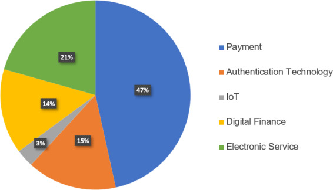
A Pragmatic Privacy-Preserving Deep Learning Framework Satisfying Differential Privacy
SN Computer Science 5, article 130 Scopus indexed
Abstract for A Pragmatic Privacy-Preserving Deep Learning Framework Satisfying Differential Privacy
With the increasing use of technology in our daily lives, data privacy has become a critical issue. It is essential to carefully design technologies to ensure the protection of people’s personal information. In fact, what we need are privacy-enhancing technologies (PETs) rather than solely focusing on technologies themselves. Artificial intelligence (AI) and deep learning technologies, which are considered societal locomotives, are no exception. However, AI practitioners usually design and develop without considering privacy concerns. To address this gap, we propose a pragmatic privacy-preserving deep learning framework that is suitable for AI practitioners. Our proposed framework is designed to satisfy differential privacy, a rigorous standard for preserving privacy. It is based on a setting called Private Aggregation of Teacher Ensembles (PATE), in which we have made several improvements to achieve a better level of accuracy and privacy protection. Specifically, we use a differential private aggregation mechanism called sparse vector technique and combine it with several other improvements such as human-in-the-loop and pre-trained models. Our proposed solution demonstrates the possibility of producing privacy-preserving models that approximate ground-truth models with a fixed privacy budget. These models are capable of handling a large number of training requests, making them suitable for deep learning training processes. Furthermore, our framework can be deployed in both centralized and distributed training settings. We hope that our work will encourage AI practitioners to adopt PETs and build technologies with privacy in mind.
BibTeX for A Pragmatic Privacy-Preserving Deep Learning Framework Satisfying Differential Privacy
@article{dang2024pragmatic,
title={{A Pragmatic Privacy-Preserving Deep Learning Framework Satisfying Differential Privacy}},
author={Tran Khanh Dang and P. T. Tran-Truong},
journal={SN Computer Science},
year={2024},
volume={5},
pages={130},
doi={10.1007/s42979-023-02437-1}
}Figure

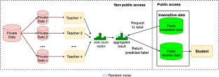
Preprints
SemReuse: Certified Reuse of Cached Natural-Language Views for Semantic Operators
arXiv:2610.16035 Preprint
Abstract for SemReuse
Abstract summary
SemReuse caches the results of natural-language filters and compares new filters with earlier ones to decide which records can skip another LLM call. A sampling audit bounds recall and precision against full LLM evaluation for each query. If the audit falls short of the requested guarantee, SemReuse evaluates more records.
BibTeX for SemReuse
@misc{trantruong2026semreuse,
title={{SemReuse: Certified Reuse of Cached Natural-Language Views for Semantic Operators}},
author={Phat T. Tran-Truong and Tung Kieu and Xuan-Bach Le and Son X. Ha and Duc Kieu and Bin Yang and Christian S. Jensen},
year={2026},
eprint={2610.16035},
archivePrefix={arXiv},
primaryClass={cs.DB},
doi={10.48550/arXiv.2610.16035},
url={https://arxiv.org/abs/2610.16035}
}Figure

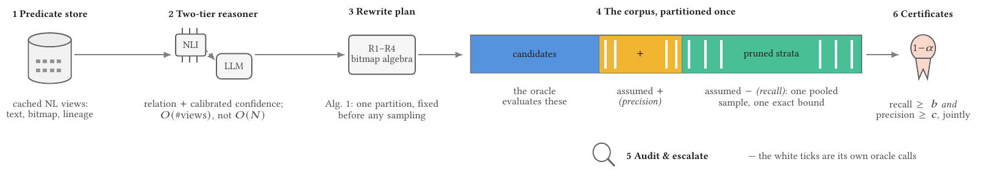